Chapter 1 Elliptical Fourier Analysis
Prior to running the full 3D geometric morphometric (3DGM) analysis, an elliptic Fourier analysis was conducted to identify differences in the plan view of Dalton projectile points. These data have utility in developing the subsequent 3D landmarking protocol (LM3d3) used in the 3DGM analysis.
The 2D images used in the EFA were exported as screen captures from Geomagic Design X, and are oriented using the same exact alignment as the 3D dataset. Each image was then masked in Photoshop to render the binary (black/white) image used for this preliminary analysis.
1.1 Load packages + data
## here() starts at D:/github/dalton/supp##
## Momocs is now retired and will no longer be maintained.
## It is superseded by Momocs2 and more generally MomX ecosystem:
##
## < https://momx.github.io >##
## Attaching package: 'Momocs'## The following object is masked from 'package:stats':
##
## filter# read images + attribute data
jpg.list <- list.files(here("/jpeg"), full.names = TRUE)
att.data <- read.csv("qdata.csv", header = TRUE, as.is = TRUE)
# attributes to factors
att.data$heart.out <- as.factor(att.data$heart.out)
att.data$heart.out <- as.factor(att.data$heart.out)
att.data$heart.reg <- as.factor(att.data$heart.reg)
att.data$bev <- as.factor(att.data$bev)
att.data$bev.type <- as.factor(att.data$bev.type)
# colors
col.out <- wes_palette("Moonrise2")1.2 Generate outlines
## Extracting 45.jpg outlines...## [ 1 / 45 ] 11AI225.jpg
## [ 2 / 45 ] 11HE445.jpg
## [ 3 / 45 ] HK49_1462.jpg
## [ 4 / 45 ] HK49_2.jpg
## [ 5 / 45 ] HK49_3022.jpg
## [ 6 / 45 ] HK49_3823.jpg
## [ 7 / 45 ] HK49_4.jpg
## [ 8 / 45 ] HK49_5928.jpg
## [ 9 / 45 ] HK49_5961.jpg
## [ 10 / 45 ] HK49_7.jpg
## [ 11 / 45 ] Keil-Mangold3.jpg
## [ 12 / 45 ] KeilMangold10.jpg
## [ 13 / 45 ] KeilMangold13.jpg
## [ 14 / 45 ] KeilMangold14.jpg
## [ 15 / 45 ] KeilMangold17.jpg
## [ 16 / 45 ] KeilMangold24.jpg
## [ 17 / 45 ] KeilMangold42.jpg
## [ 18 / 45 ] KeilMangold64.jpg
## [ 19 / 45 ] KeilMangold8.jpg
## [ 20 / 45 ] KeilMangold90.jpg
## [ 21 / 45 ] Kinzer46.jpg
## [ 22 / 45 ] Kinzer49.jpg
## [ 23 / 45 ] Kinzer50.jpg
## [ 24 / 45 ] Leprechaun11MS1983FSI800-5.jpg
## [ 25 / 45 ] MA1699p1.jpg
## [ 26 / 45 ] MA1699p3.jpg
## [ 27 / 45 ] McL4_158.jpg
## [ 28 / 45 ] McL4_614.jpg
## [ 29 / 45 ] McL7_101.jpg
## [ 30 / 45 ] McL7_168.jpg
## [ 31 / 45 ] Nochta11MS128BFSI267-1.jpg
## [ 32 / 45 ] Nochta11MS128bFSIPP1001.jpg
## [ 33 / 45 ] Nochta11MS128BFSIPP2495.jpg
## [ 34 / 45 ] Nochta11MS128BFSIPP3305.jpg
## [ 35 / 45 ] Nochta11MS12BFIS800-168.jpg
## [ 36 / 45 ] OH1_176.jpg
## [ 37 / 45 ] ReedVoss2.jpg
## [ 38 / 45 ] TR10_19.jpg
## [ 39 / 45 ] TR10_4.jpg
## [ 40 / 45 ] Welton1.jpg
## [ 41 / 45 ] Welton2.jpg
## [ 42 / 45 ] Welton3.jpg
## [ 43 / 45 ] Welton4.jpg
## [ 44 / 45 ] Welton5.jpg
## [ 45 / 45 ] Welton6.jpg## Done in 7.3 secs1.3 Pile and mosaics
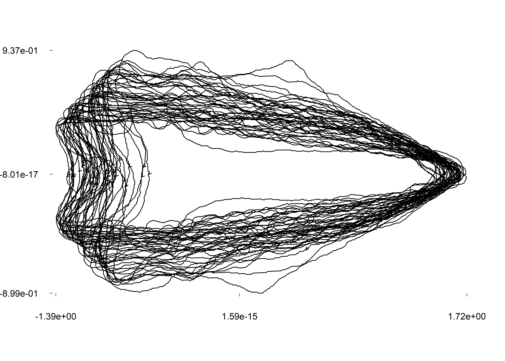
# mosaics
# in/out of heartland
mosaic(norm.outlines, ~heart.out, asp = 1, palette = pal_qual_Dark2)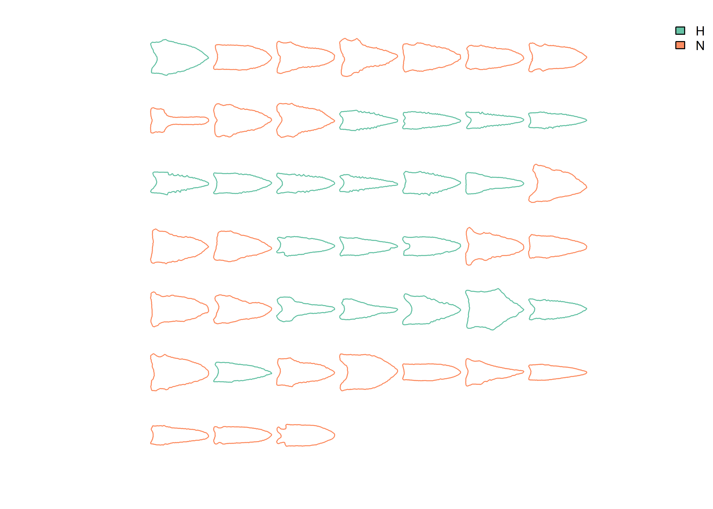
# heartland regions (heartland, interior, and northern periphery)
mosaic(norm.outlines, ~heart.reg, asp = 1, palette = pal_qual_Dark2)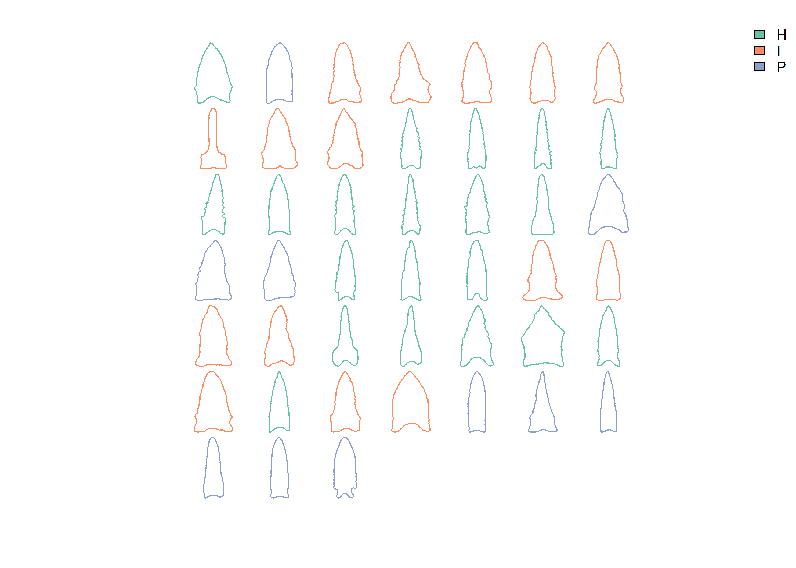
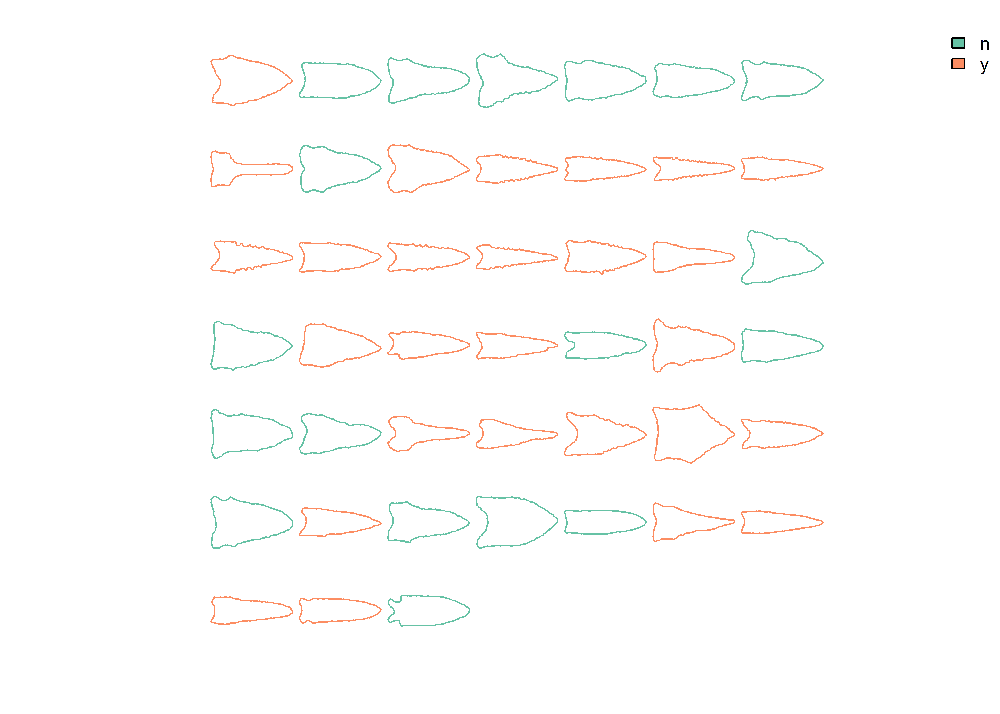
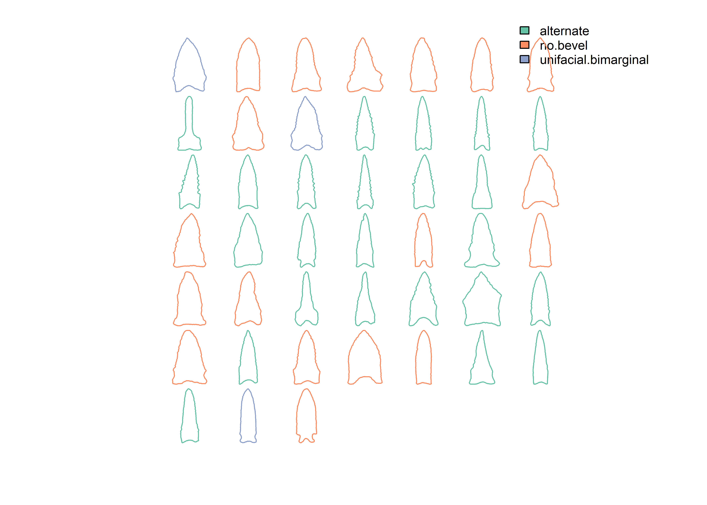
1.4 Calibrate harmonic + EFA
## $gg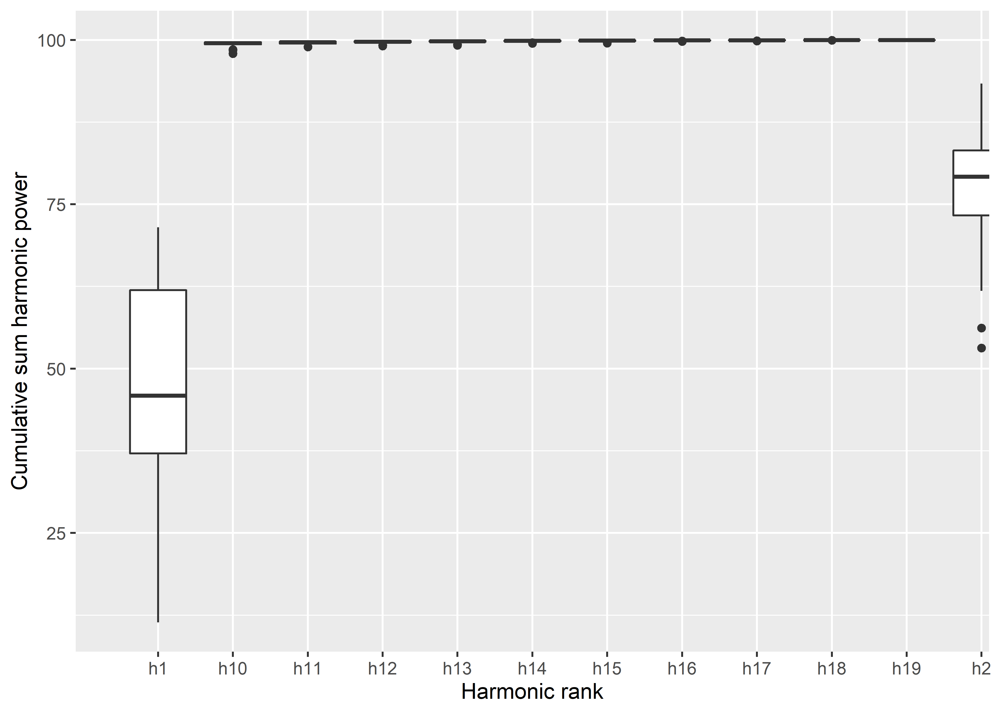
##
## $q
## h1 h2 h3 h4 h5
## 11AI225 66.18668 71.56266 91.23482 93.52223 97.91355
## 11HE445 31.71380 68.00042 87.76597 90.37718 96.81345
## HK49_1462 54.77031 83.17790 94.41895 95.35329 98.43893
## HK49_2 71.50329 83.31028 94.41132 95.49433 97.87996
## HK49_3022 48.39494 79.30088 90.31980 91.90675 95.50910
## HK49_3823 41.02266 81.71531 90.90259 92.09555 96.59107
## HK49_4 51.06059 76.17592 89.59546 90.70925 95.32511
## HK49_5928 52.37516 93.35387 94.97209 95.02615 98.28995
## HK49_5961 62.96163 83.49033 93.61738 94.31914 97.28153
## HK49_7 63.54297 76.16877 91.15774 93.68197 98.02700
## Keil-Mangold3 36.92348 77.42257 88.46542 89.06440 95.29969
## KeilMangold10 30.66085 81.18734 90.68406 91.78727 96.26064
## KeilMangold13 37.11521 74.05227 85.03287 86.39464 93.96513
## KeilMangold14 29.04780 84.09499 89.58838 91.71462 95.52528
## KeilMangold17 42.47902 74.47388 87.70073 88.72376 95.49248
## KeilMangold24 34.60233 65.07349 85.49001 88.26197 95.70266
## KeilMangold42 32.04287 61.81458 83.29544 87.14419 95.01931
## KeilMangold64 42.93900 78.52855 87.93326 89.21172 95.08793
## KeilMangold8 34.83942 74.13054 88.24788 91.03793 95.68828
## KeilMangold90 42.81487 90.79557 95.39600 95.98156 98.37536
## Kinzer46 70.33790 79.02209 95.51880 97.01168 98.66173
## Kinzer49 59.31487 84.47910 95.25888 95.77987 97.99347
## Kinzer50 65.44184 84.99214 94.95731 95.33941 98.10893
## Leprechaun11MS1983FSI800-5 41.50553 74.62689 84.36269 85.94567 90.78311
## MA1699p1 45.90440 72.96551 86.20258 88.58088 95.29469
## MA1699p3 40.00252 53.13164 78.18449 81.89398 93.54727
## McL4_158 62.10878 83.85781 92.41304 92.51768 96.82901
## McL4_614 42.73570 81.65149 91.05945 93.72356 97.08052
## McL7_101 52.69355 82.35807 93.29284 93.35288 97.29253
## McL7_168 57.53115 79.39151 93.24306 94.56819 98.28313
## Nochta11MS128BFSI267-1 62.71156 83.26033 91.42871 92.25802 97.91593
## Nochta11MS128bFSIPP1001 59.32746 81.74062 91.75299 92.60223 97.31183
## Nochta11MS128BFSIPP2495 63.65100 69.73261 93.03348 95.00499 98.45445
## Nochta11MS128BFSIPP3305 50.62463 56.18438 88.60695 88.86063 97.18311
## Nochta11MS12BFIS800-168 42.97063 63.97628 84.15762 87.29134 95.31437
## OH1_176 65.24696 81.99938 93.93475 94.61611 97.50530
## ReedVoss2 45.55421 71.69262 87.23360 88.63422 96.09138
## TR10_19 53.56373 81.55262 91.63256 92.65051 97.52262
## TR10_4 61.92913 73.31379 94.02994 95.84468 98.68984
## Welton1 11.39291 77.05020 85.52808 91.48072 95.32411
## Welton2 67.61736 86.49242 94.60502 94.95758 97.79397
## Welton3 33.95774 81.90709 89.18768 91.15808 95.58114
## Welton4 33.90037 84.13558 91.37781 92.67638 96.78332
## Welton5 19.96734 79.21885 86.69763 91.04814 94.68065
## Welton6 43.90564 66.07756 75.97847 77.94012 83.05639
## h6 h7 h8 h9 h10
## 11AI225 98.10294 98.49080 98.98961 99.07087 99.48703
## 11HE445 97.47767 98.86839 99.14479 99.18980 99.47455
## HK49_1462 98.65503 99.30013 99.43902 99.47831 99.72894
## HK49_2 98.57595 98.98002 99.25857 99.52727 99.65659
## HK49_3022 96.02254 98.26328 98.88060 99.07661 99.47851
## HK49_3823 96.90104 98.73089 99.07067 99.55885 99.64301
## HK49_4 96.59638 98.24941 98.69573 98.77843 99.49395
## HK49_5928 98.73472 99.10547 99.23040 99.65007 99.70397
## HK49_5961 97.63356 98.66096 98.86936 99.04765 99.48465
## HK49_7 98.25801 99.02253 99.11723 99.34876 99.75291
## Keil-Mangold3 96.22379 98.11702 98.28659 99.26402 99.42210
## KeilMangold10 96.53226 97.99246 98.08294 98.77661 98.85932
## KeilMangold13 95.30306 98.31182 98.48662 99.32247 99.42195
## KeilMangold14 96.22420 98.00602 98.18528 99.06264 99.21574
## KeilMangold17 96.71112 98.63372 98.67051 99.09769 99.20569
## KeilMangold24 96.02241 98.89177 98.94385 99.14781 99.33411
## KeilMangold42 95.80262 98.49166 98.84542 99.28779 99.38843
## KeilMangold64 95.53587 98.25528 98.52489 99.44268 99.50013
## KeilMangold8 96.28801 98.13136 98.41405 99.00932 99.20757
## KeilMangold90 98.46630 99.44468 99.46978 99.74061 99.77866
## Kinzer46 98.94227 98.96786 99.56643 99.64917 99.73433
## Kinzer49 98.38394 98.77454 99.15880 99.23428 99.54470
## Kinzer50 98.46743 99.18040 99.37676 99.45718 99.69452
## Leprechaun11MS1983FSI800-5 92.21101 95.59745 96.42852 98.14350 98.42368
## MA1699p1 95.89919 98.25385 98.60495 99.16375 99.31342
## MA1699p3 95.27500 98.41191 98.67541 99.06007 99.09438
## McL4_158 98.34804 98.76789 99.38597 99.70625 99.75988
## McL4_614 97.13061 99.00538 99.23101 99.74212 99.76258
## McL7_101 98.25765 98.85622 99.12916 99.20004 99.79267
## McL7_168 98.62874 99.09836 99.27519 99.29297 99.66385
## Nochta11MS128BFSI267-1 98.46809 99.32012 99.35164 99.64799 99.66857
## Nochta11MS128bFSIPP1001 97.81025 99.31377 99.37977 99.63628 99.65221
## Nochta11MS128BFSIPP2495 98.70157 98.80832 99.25433 99.46432 99.79058
## Nochta11MS128BFSIPP3305 97.75743 98.06819 98.71883 98.92568 99.20282
## Nochta11MS12BFIS800-168 96.20255 98.45093 98.88566 99.23521 99.30013
## OH1_176 97.82201 98.55653 98.73204 99.11266 99.56660
## ReedVoss2 96.78253 98.57354 98.81740 99.20475 99.32453
## TR10_19 97.81025 98.64173 99.01780 99.41266 99.55578
## TR10_4 98.81733 98.86542 99.50520 99.62770 99.79192
## Welton1 95.89848 97.94971 98.17442 99.26838 99.38531
## Welton2 97.91220 98.95367 99.21988 99.46104 99.58883
## Welton3 96.05185 98.17714 98.30586 99.33863 99.37360
## Welton4 97.41759 99.03729 99.14366 99.63979 99.65976
## Welton5 95.43068 97.09599 97.22612 98.27772 98.53168
## Welton6 86.56435 91.55629 93.35972 96.62547 97.91635
## h11 h12 h13 h14 h15
## 11AI225 99.67406 99.70631 99.83067 99.89645 99.95198
## 11HE445 99.53302 99.74857 99.83155 99.86798 99.89064
## HK49_1462 99.79513 99.83847 99.87109 99.89442 99.97203
## HK49_2 99.76875 99.80320 99.90730 99.94805 99.96495
## HK49_3022 99.64948 99.76534 99.79263 99.82049 99.90345
## HK49_3823 99.69597 99.84387 99.86088 99.90336 99.92922
## HK49_4 99.64466 99.68573 99.80215 99.81407 99.90398
## HK49_5928 99.75929 99.84727 99.91241 99.95240 99.95691
## HK49_5961 99.58917 99.60336 99.80849 99.83078 99.89954
## HK49_7 99.79376 99.82360 99.91892 99.92621 99.95930
## Keil-Mangold3 99.71696 99.74171 99.75922 99.82321 99.82927
## KeilMangold10 98.96524 99.12731 99.19793 99.46388 99.52495
## KeilMangold13 99.61789 99.64186 99.66412 99.76829 99.82653
## KeilMangold14 99.65721 99.67596 99.74699 99.78250 99.83223
## KeilMangold17 99.24801 99.42842 99.46495 99.67572 99.74458
## KeilMangold24 99.40224 99.65931 99.69292 99.86606 99.88402
## KeilMangold42 99.48417 99.69937 99.72194 99.81800 99.86667
## KeilMangold64 99.59336 99.65104 99.71429 99.78764 99.79087
## KeilMangold8 99.29442 99.55104 99.64563 99.76900 99.84382
## KeilMangold90 99.83614 99.88995 99.89368 99.94372 99.94811
## Kinzer46 99.77083 99.85076 99.88830 99.89389 99.90206
## Kinzer49 99.69122 99.73786 99.80523 99.88052 99.90782
## Kinzer50 99.72778 99.79117 99.81172 99.84466 99.90969
## Leprechaun11MS1983FSI800-5 99.06685 99.22942 99.32720 99.51543 99.73748
## MA1699p1 99.41556 99.62129 99.63596 99.78698 99.82468
## MA1699p3 99.20327 99.57105 99.68760 99.87323 99.91246
## McL4_158 99.80274 99.81765 99.89756 99.92963 99.93903
## McL4_614 99.79112 99.87684 99.88065 99.94882 99.96520
## McL7_101 99.84997 99.87324 99.90388 99.93391 99.95662
## McL7_168 99.70527 99.80831 99.81955 99.86535 99.91101
## Nochta11MS128BFSI267-1 99.77270 99.91925 99.92952 99.94604 99.96169
## Nochta11MS128bFSIPP1001 99.71365 99.80958 99.81904 99.92444 99.92723
## Nochta11MS128BFSIPP2495 99.80215 99.82518 99.87203 99.92725 99.94984
## Nochta11MS128BFSIPP3305 99.33792 99.43269 99.72389 99.78362 99.82656
## Nochta11MS12BFIS800-168 99.44446 99.77059 99.80238 99.84979 99.87640
## OH1_176 99.59523 99.64582 99.88035 99.89886 99.93296
## ReedVoss2 99.36367 99.64388 99.68978 99.82180 99.88040
## TR10_19 99.62968 99.84509 99.89405 99.91079 99.95326
## TR10_4 99.81087 99.84234 99.93504 99.95738 99.95792
## Welton1 99.67584 99.71951 99.79230 99.83360 99.84454
## Welton2 99.73900 99.88810 99.90517 99.91051 99.95462
## Welton3 99.69441 99.72403 99.83641 99.87142 99.87348
## Welton4 99.77721 99.81815 99.84584 99.88097 99.89230
## Welton5 99.31495 99.48053 99.54706 99.59449 99.73144
## Welton6 98.94790 99.09255 99.18568 99.53253 99.74076
## h16 h17 h18 h19
## 11AI225 99.97239 99.98116 99.99481 100
## 11HE445 99.89775 99.96522 99.98554 100
## HK49_1462 99.98009 99.98320 99.98734 100
## HK49_2 99.96890 99.97659 99.99185 100
## HK49_3022 99.92775 99.96264 99.98669 100
## HK49_3823 99.96034 99.96530 99.98627 100
## HK49_4 99.91441 99.94387 99.99133 100
## HK49_5928 99.96006 99.98453 99.99320 100
## HK49_5961 99.97206 99.98319 99.98373 100
## HK49_7 99.96108 99.97613 99.98710 100
## Keil-Mangold3 99.91472 99.92845 99.97312 100
## KeilMangold10 99.75746 99.83477 99.97147 100
## KeilMangold13 99.92424 99.96399 99.97819 100
## KeilMangold14 99.86548 99.90819 99.97552 100
## KeilMangold17 99.80871 99.86693 99.95911 100
## KeilMangold24 99.93451 99.95024 99.95449 100
## KeilMangold42 99.92328 99.92978 99.94446 100
## KeilMangold64 99.89719 99.92356 99.99261 100
## KeilMangold8 99.92820 99.94019 99.97497 100
## KeilMangold90 99.96954 99.97937 99.98885 100
## Kinzer46 99.93342 99.94745 99.97476 100
## Kinzer49 99.93033 99.93584 99.97141 100
## Kinzer50 99.92801 99.93738 99.95529 100
## Leprechaun11MS1983FSI800-5 99.95214 99.95659 99.98051 100
## MA1699p1 99.94327 99.95594 99.96975 100
## MA1699p3 99.91565 99.96029 99.98990 100
## McL4_158 99.96124 99.97140 99.99140 100
## McL4_614 99.97398 99.98263 99.98382 100
## McL7_101 99.96062 99.97999 99.98540 100
## McL7_168 99.93514 99.97393 99.98006 100
## Nochta11MS128BFSI267-1 99.98049 99.99166 99.99499 100
## Nochta11MS128bFSIPP1001 99.95598 99.95930 99.97340 100
## Nochta11MS128BFSIPP2495 99.95918 99.97001 99.98974 100
## Nochta11MS128BFSIPP3305 99.88350 99.91832 99.94746 100
## Nochta11MS12BFIS800-168 99.89814 99.95164 99.95520 100
## OH1_176 99.96416 99.98159 99.99453 100
## ReedVoss2 99.94291 99.95531 99.96936 100
## TR10_19 99.95793 99.97675 99.98567 100
## TR10_4 99.98032 99.98618 99.99449 100
## Welton1 99.92178 99.93489 99.98638 100
## Welton2 99.95620 99.97122 99.97592 100
## Welton3 99.94359 99.94528 99.99199 100
## Welton4 99.95613 99.96836 99.98335 100
## Welton5 99.92359 99.98223 99.99879 100
## Welton6 99.84686 99.91989 99.96848 100
##
## $minh
## 90% 95% 99% 99.9%
## 4 6 10 16# 10 harmonics capture 99 percent of variation
calibrate_reconstructions_efourier(norm.outlines, range = 1:10)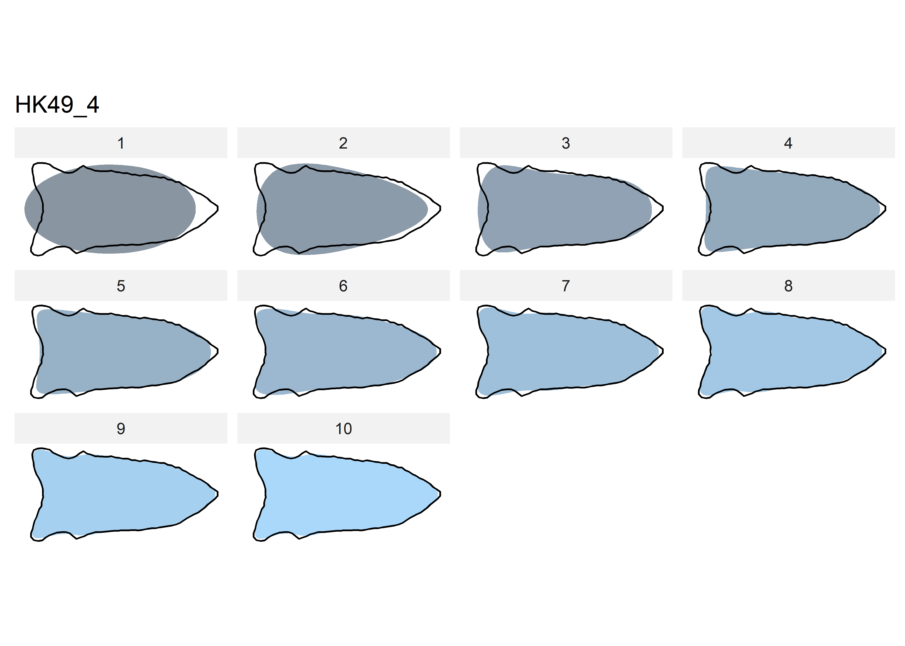
1.5 PCA
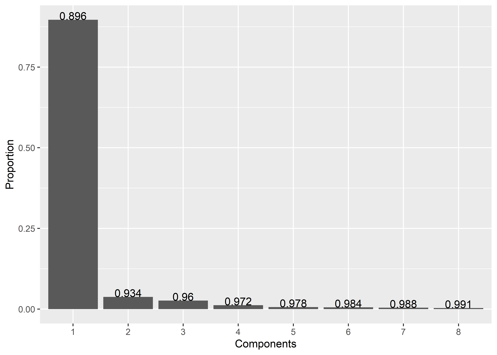
# plot pca
# heartland in/out
plot_PCA(pca.outlines, morphospace_position = "range", ~heart.out, zoom = 1.25, palette = pal_qual_Dark2)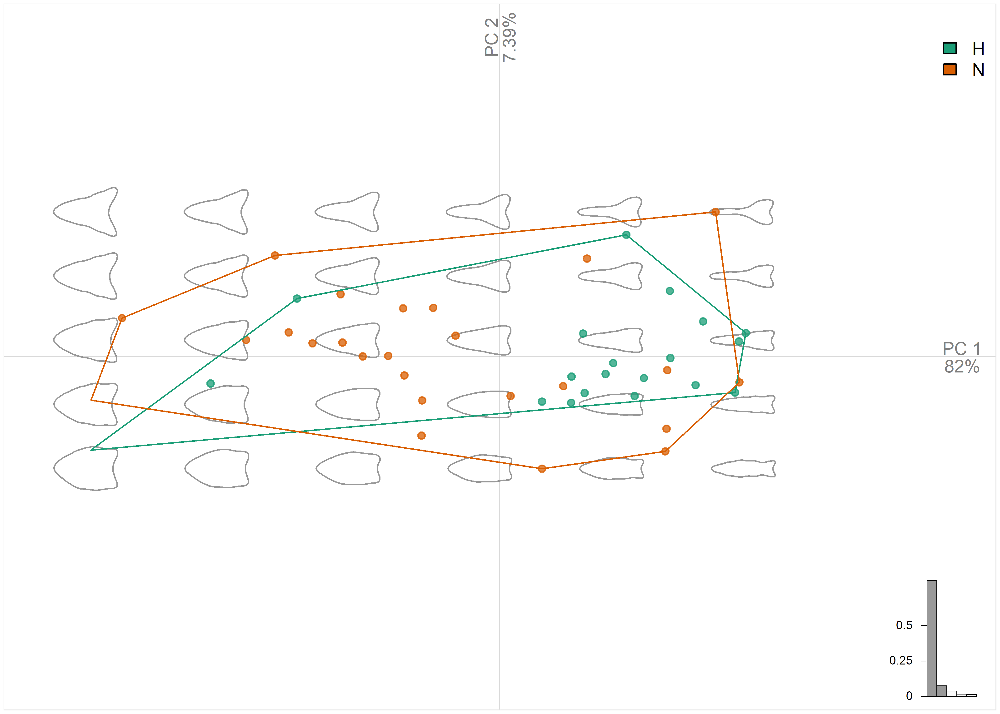
# heartland region
plot_PCA(pca.outlines, morphospace_position = "range", ~heart.reg, zoom = 1.25, palette = pal_qual_Dark2)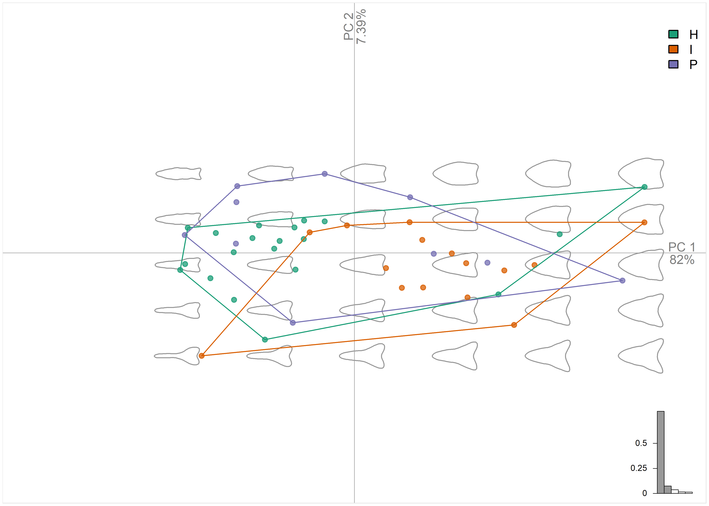
# beveled or not
plot_PCA(pca.outlines, morphospace_position = "range", ~bev, zoom = 1.25, palette = pal_qual_Dark2)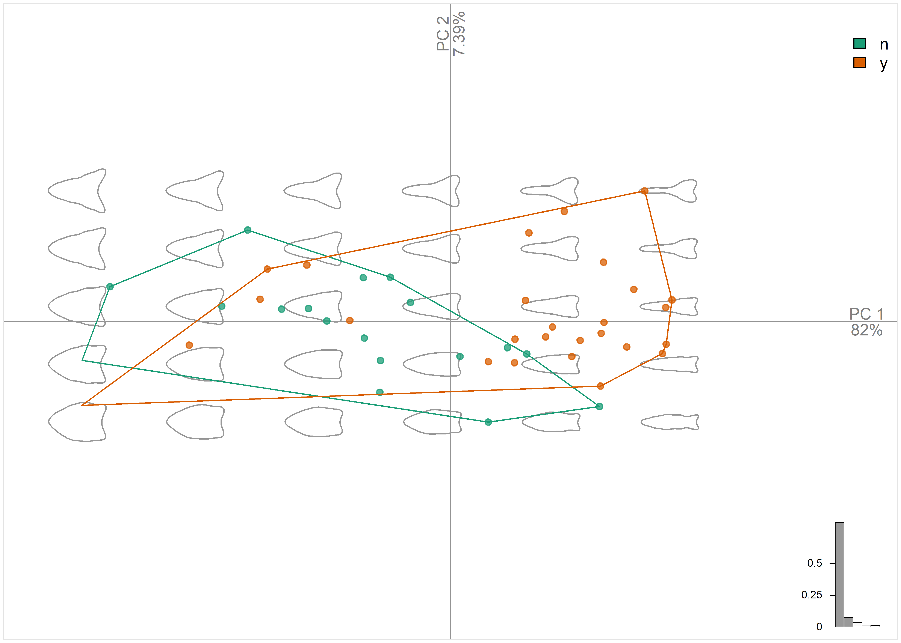
# bevel type
plot_PCA(pca.outlines, morphospace_position = "range", ~bev.type, zoom = 1.25, palette = pal_qual_Dark2)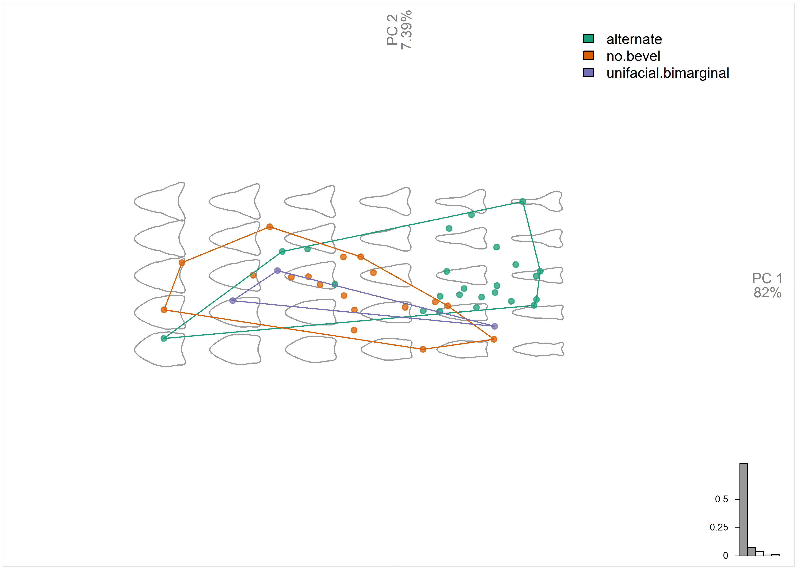
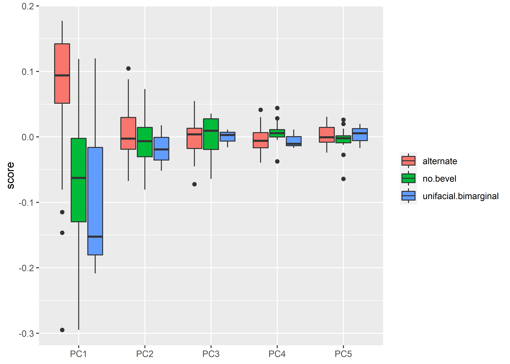
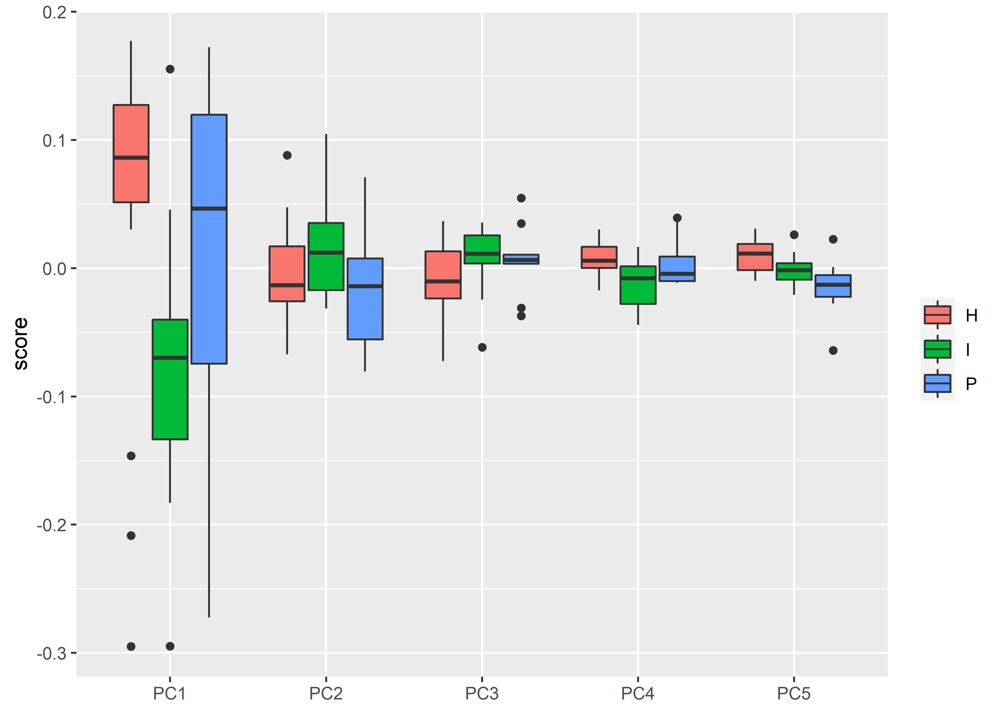
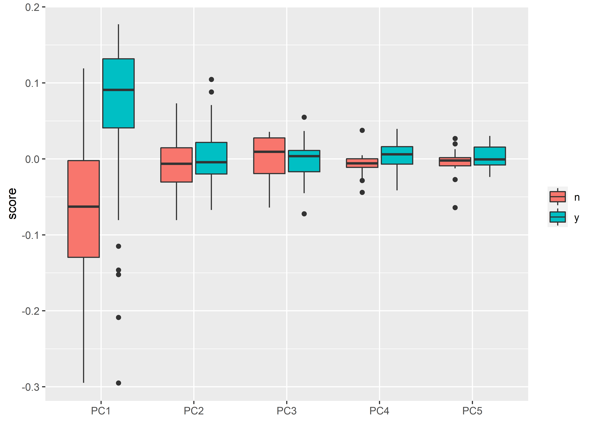
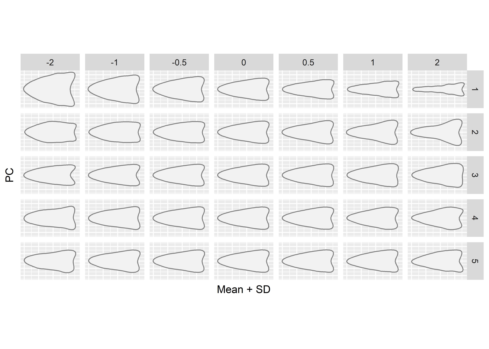
1.6 MANOVA + MANOVA_PW
## PC axes 1 to 11 were retained## Df Hotelling-Lawley approx F num Df den Df Pr(>F)
## fac 1 2.2567 6.7702 11 33 8.509e-06 ***
## Residuals 43
## ---
## Signif. codes: 0 '***' 0.001 '**' 0.01 '*' 0.05 '.' 0.1 ' ' 1## PC axes 1 to 11 were retained## Df Hotelling-Lawley approx F num Df den Df Pr(>F)
## fac 2 3.22 4.5373 22 62 1.338e-06 ***
## Residuals 42
## ---
## Signif. codes: 0 '***' 0.001 '**' 0.01 '*' 0.05 '.' 0.1 ' ' 1## 'P' has 10 rows, and 'retain' is set accordingly## PC axes 1 to 10 were retained## HI## HP## IP## $stars.tab
## H I P
## H *** *
## I -
##
## $summary (see also $manovas)
## Df Pillai approx F num Df den Df Pr(>F)
## H - I 1 0.8230 11.161 10 24 8.432e-07
## H - P 1 0.6243 3.157 10 19 1.497e-02
## I - P 1 0.5993 2.094 10 14 1.002e-01## PC axes 1 to 11 were retained## Df Hotelling-Lawley approx F num Df den Df Pr(>F)
## fac 1 1.4003 4.2008 11 33 0.0006492 ***
## Residuals 43
## ---
## Signif. codes: 0 '***' 0.001 '**' 0.01 '*' 0.05 '.' 0.1 ' ' 1## PC axes 1 to 11 were retained## Df Hotelling-Lawley approx F num Df den Df Pr(>F)
## fac 2 2.8851 4.0654 22 62 6.942e-06 ***
## Residuals 42
## ---
## Signif. codes: 0 '***' 0.001 '**' 0.01 '*' 0.05 '.' 0.1 ' ' 1## 'unifacial.bimarginal' has 3 rows, and 'retain' is set accordingly## PC axes 1 to 3 were retained## alternateno.bevel## alternateunifacial.bimarginal## no.bevelunifacial.bimarginal## $stars.tab
## alternate no.bevel unifacial.bimarginal
## alternate ** -
## no.bevel -
##
## $summary (see also $manovas)
## Df Pillai approx F num Df den Df
## alternate - no.bevel 1 0.31188 5.74105 3 38
## alternate - unifacial.bimarginal 1 0.15736 1.43175 3 23
## no.bevel - unifacial.bimarginal 1 0.01703 0.09817 3 17
## Pr(>F)
## alternate - no.bevel 0.002427
## alternate - unifacial.bimarginal 0.259215
## no.bevel - unifacial.bimarginal 0.9599621.7 Mean shapes
Figure 1.1: Mean shapes for in (H) and out (N) of the heartland.
Figure 1.2: Mean shapes for heartland (H), interior (I), and northern periphery (P).
Figure 1.3: Mean shapes for beveled (y), and not beveled (n).
Figure 1.4: Mean shapes for alternate, unifacial.bimarginal, and no.bevel.